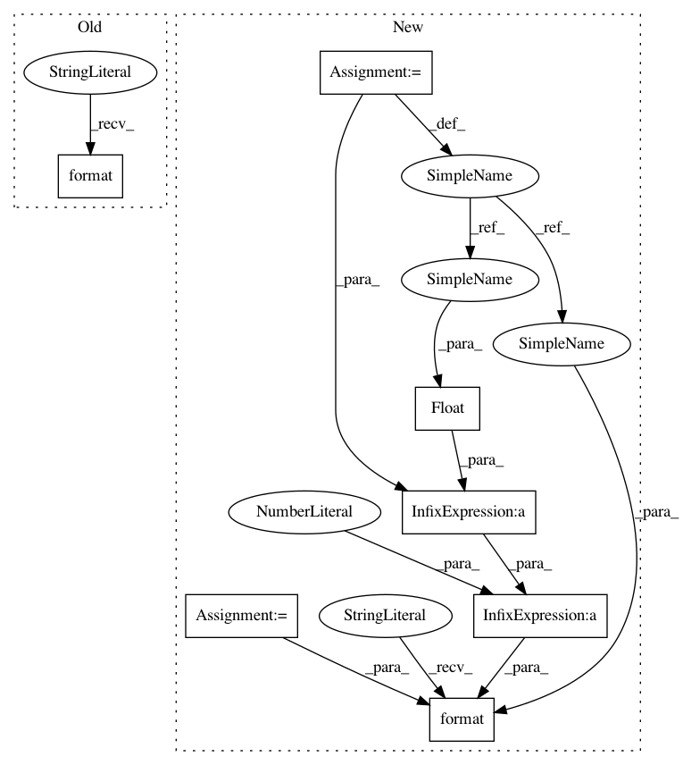

77a6ec73c53c5cc62a2ae451694537144afa5644,mnist/main.py,,test,#Any#,74
Before Change
test_loss = test_loss.data[0]
test_loss /= (test_data.size(0) / TEST_BATCH_SIZE) // criterion averages over batch size
print("TEST SET RESULTS:" + " " * 20)
print("Average loss: {:.4f}".format(test_loss))
for epoch in range(1, NUM_EPOCHS+1):
train(epoch)
After Change
batch_data.data[:] = test_data[i:i+TEST_BATCH_SIZE]
batch_targets.data[:] = test_labels[i:i+TEST_BATCH_SIZE]
output = model(batch_data)
test_loss += criterion(output, batch_targets)
pred = output.data.max(1)[1]
correct += pred.long().eq(batch_targets.data.long()).sum()
test_loss = test_loss.data[0]
test_loss /= (test_data.size(0) / TEST_BATCH_SIZE) // criterion averages over batch size
print("TEST SET RESULTS:" + " " * 20)
print("Average loss: {:.4f}, Accuracy: {}/{} ({:.0f}%)".format(
test_loss, correct, test_data.size(0),
float(correct)/test_data.size(0)*100))
for epoch in range(1, NUM_EPOCHS+1):
train(epoch)
In pattern: SUPERPATTERN
Frequency: 3
Non-data size: 7
Instances
Project Name: pytorch/examples
Commit Name: 77a6ec73c53c5cc62a2ae451694537144afa5644
Time: 2016-09-14
Author: alerer@fb.com
File Name: mnist/main.py
Class Name:
Method Name: test
Project Name: OpenNMT/OpenNMT-py
Commit Name: 77a6ec73c53c5cc62a2ae451694537144afa5644
Time: 2016-09-14
Author: alerer@fb.com
File Name: mnist/main.py
Class Name:
Method Name: test
Project Name: NifTK/NiftyNet
Commit Name: fe65da57a1f4e7a6ec365636a92ccca5cef6e80a
Time: 2017-11-16
Author: wenqi.li@ucl.ac.uk
File Name: niftynet/io/image_sets_partitioner.py
Class Name: ImageSetsPartitioner
Method Name: to_string